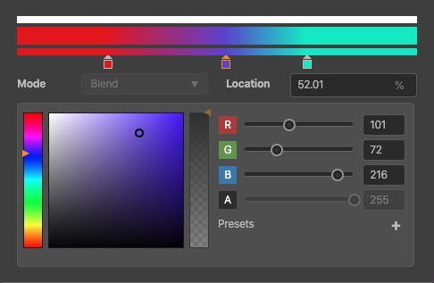

渐变色编辑器
渐变色编辑器可以设置粒子中某个属性随时间变化的颜色，渐变色编辑器的界面如下图

渐变色编辑器可以进行如下操作：
- Mode可以选择两种模式，Blend模式会按照当前时刻相邻的两个关键帧进行插值得到当前帧的颜色，Fixed模式会直接使用当前时刻的前一个关键帧颜色。
- 点击色带上方的空白处可以插入一个 alpha 关键帧，点击色带下方的空白处可以插入一个 rgb 关键帧。
- 拖动关键帧左右移动可以调节关键帧位置，拖动关键帧上下移动可以删除该关键帧。
- 在 Color/Alpha 编辑框内可以编辑对应的 rgb 或 alpha 值。
- Location 可以编辑已选中的关键帧的位置。